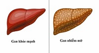

Top 5 Thuốc Bổ Dành Cho Bà Bầu Được Đánh Giá Cao Hiện Nay
Sự xuất hiện của các loại thuốc bổ rất có thể đáp nhu cầu gia tăng năng lượng cho thai phụ, tuy nhiên không phải chị em nào cũng biết cách lựa chọn sản phẩm phù hợp với mình khi đứng trước không gian mua sắm rộng lớn.
Top 5 Thuốc Bổ Dành Cho Bà Bầu Được Đánh Giá Cao Hiện Nay
Viêm gan nhiễm mỡ là tình trạng gan có chất béo tích tụ và bị viêm. Có nhiều lý do gây ra bệnh, nhưng trong trường hợp bệnh không gây ra do uống rượu thì bệnh có tên là NASH (bệnh gan nhiễm mỡ không do rượu)
Top 11 thực phẩm chức năng tập gym chất lượng nhất
Để việc tập luyện đạt hiệu quả cao, bạn cần có một chế độ dinh dưỡng phù hợp. Sử dụng thực phẩm chức năng tập gym là lựa chọn hàng đầu để cải thiện sức khỏe. Đây là liệu pháp giúp tăng cơ, giảm mỡ, mang lại nhiều lợi ích khác cho người tập thể hình.